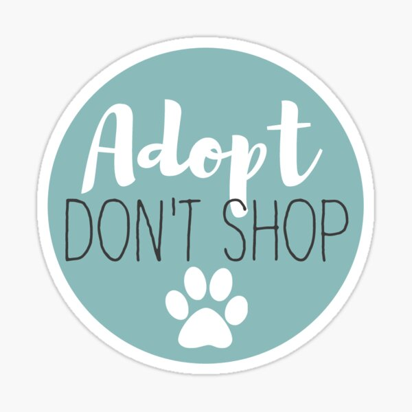
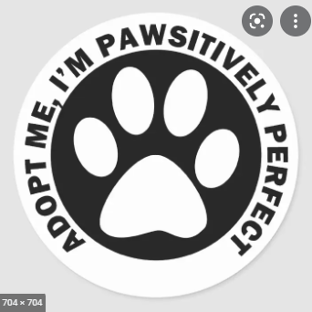
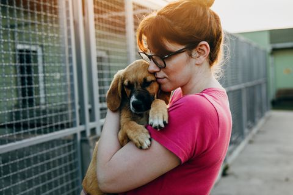
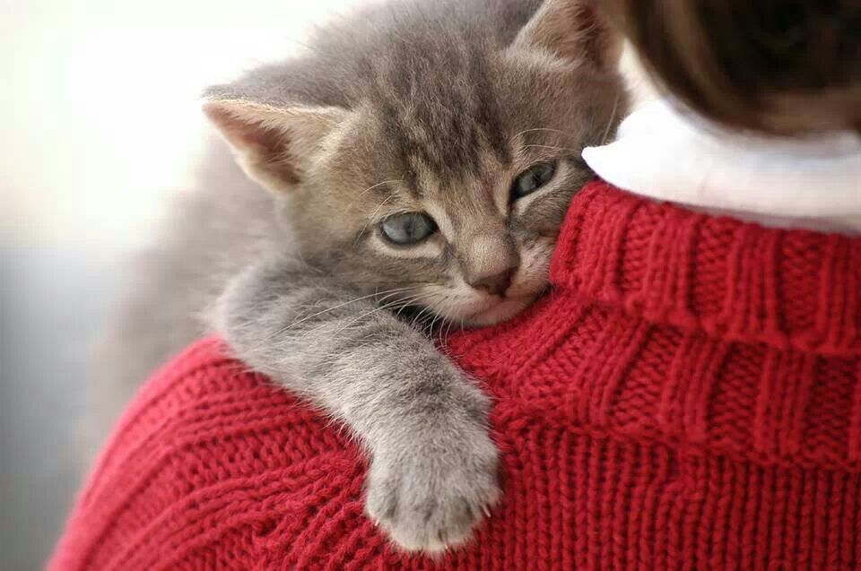
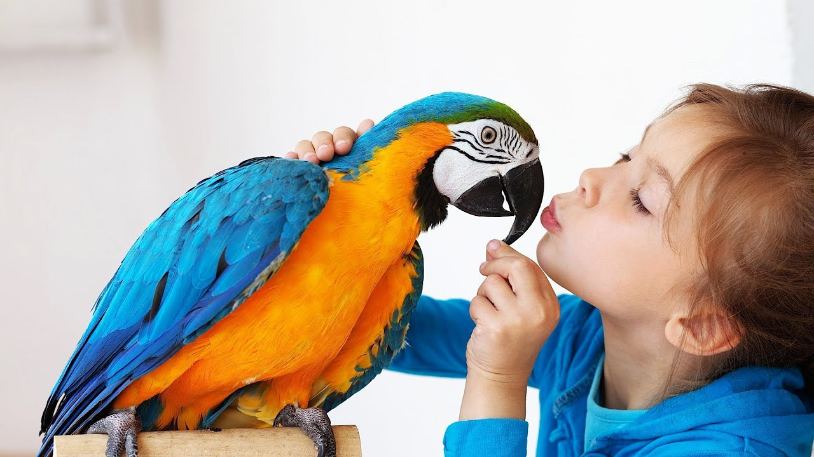
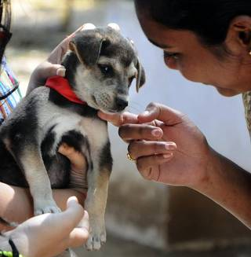

- HOME
-
adoption
 “Adopt, don’t shop”
A campaign slogan encouraging people to adopt animals from shelters or rescues rather than purchasing a dog from a breeder or puppy mill. Every time an animal is adopted, a space opens up in the shelter or the rescue. So when you adopt a cat or dog, not only are you saving that animal’s life, but you are also opening up a space for another animal’s life to be saved.
With more adoptable pets than ever, we have an urgent need for pet adopters.WHY ADOPTION?
   "In a world full of choices, choose to make a difference. Adopt, don't shop.Adopting a pet means gaining a family member who will be there for you through thick and thin. The best part of adopting is not just giving a pet a home but gaining a friend who will be there for life's adventures."
If you’re ready to share the couch and have a new buddy, here’s where you can start.ADOPT INDIE DOGS!
Indie dogs, having thrived on the streets, showcase exceptional adaptability and street smarts. Known for their keen alertness, they easily adjust to new environments, and according to various accounts, they prove to be more trainable. While their territorial instincts might lead to adult aggression towards unfamiliar dogs or people, socialization plays a crucial role in maintaining their composure. Despite their watchdog reputation, Indies are adored for their generally cheerful and sociable demeanor, forming strong bonds of loyalty with their family and owners.

But their generally cheerful and social nature makes them very lovable among people, and even develop a strong bond of loyalty with their family and owners.
We have taken measures to vaccinate them and it is absolutely safe to make them a part of your family!
Love an Indie dog, and they’ll love you back in abundance.AVAILABLE FOR ADOPTION

Emali
EMALI
STATUS: Available
Sweet Angel, Lap Cat
We love that girl, but due to apartment rules, can't keep her!

Coco
COCO
STATUS: Available
Sweet Angel, Naughty
Wagholi,Pune
Call:8076544337
Goldie
GOLDIE
STATUS: Available
Playful
Karvenagar, Pune
Call:8060783410